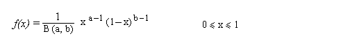
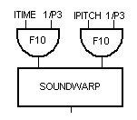
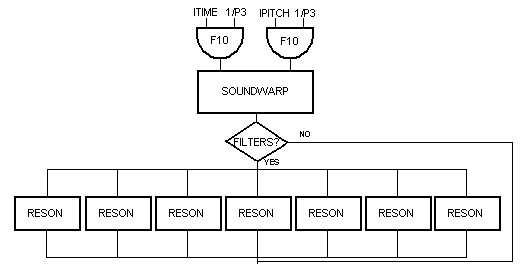
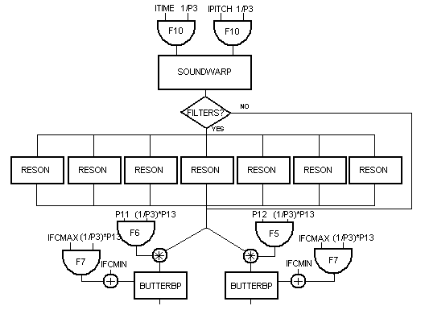
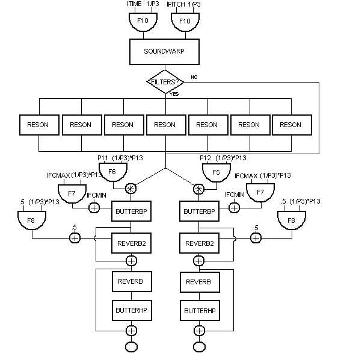

The idea of this work comes from the short story The Impossible Planet (1953) by Philip K. Dick (1928-1982). The story is set on Earth in a future time after a catastrophic event. The piece wants to recall, in a metaphorical sense, the description of the sounds in the landscape. The whole work is realized with the sound synthesis program Csound. I used only an original Csound instrument and a recorded sound of a female singing voice. This sound has been transformed, filtered and put in different locations in the stereophonic environment. I used the voice after some experiments with different kinds of sound: the voice sounds, because of their characteristics, gave the effect I was searching for producing a wind simulation. To produce the wind effect the voice is stretched many times and the pitch is controlled by a random process. The spatialization has been obtained with the creation of a circular movement of sounds: if the higher frequencies of a sound are progressively eliminated one perceives the sound behind him. I used this technique to obtain a simulation of a wind coming from different directions. In my Csound instrument I have included the control of the number of sound rotations in the stereophonic environment: when I have changed the number of sound rotations it has been possible to realize a dynamic sound movement. The structure of the piece is divided in two parts: the first, which is only one minute in length, is composed with no filtered sound. The second part is realized with filtered sounds and a large number of sound rotations. The filtered sounds come from a bank of resonant filters. The second part is recognizable especially by the presence of a higher pitch of sounds, that is the result of using the bank of filters. Two different reverberation units are used, one to transform sounds, the other for reverberation of the whole piece. The first reverberation unit controls the decay of high frequencies in the reverberated sounds. This parameter is controlled by a different function for each stereo channel. The second reverberation unit is used for simple reverberation. The goal of the piece was to obtain a dark sound, evoking a dead landscape: this was obtained especially with time stretching of the voice sound, using a particular Csound unit (soundwarp, by R. Karpen, 1992-97): it can stretch a sound and change its pitch at the same time. So the piece is realized with only one Csound instrument: this is possible because of the Csound powerful features.
Csound is presently one of the best known programs for digital sound synthesis. It is the development of a large number of languages (starting from the early 1960s: Music4B, Music 360, Music11 etc.) and runs on many different platforms. Because it is entirely written in C, it can be easily installed on any machine running a Unix system or the C language. These features permitted a strong development of Csound. Today we can say that it is objectively possible to create digital music with really few limitations. Of course, composers ask for realtime synthesis and Csound cannot support this yet. Probably the next generation of computer processors will give the composer the advantages of realtime synthesis. Csound works with two files, an orchestra file and a score file. In the orchestra file it is possible to build whatever instrument for producing or transforming sounds. In the score file we can control every single moment of the output sound. The composer can realize complex algorithms and produce music in a relatively brief time (depending on the algorithm's complexity). The goal of Csound developers is now realtime: today it is possible to run some Csound versions in realtime, but only for some algorithms. Composers and developers can appreciate the progress in digital sound synthesis. To learn Csound can be slow and sometimes difficult: there are some utility programs that can help the composers to build instruments and scores. These programs have many limitations, but they can give a good help to many people that want to use Csound, especially the beginners. An example of a simple interface for Csound is my score generator MCCs - Musique Concrëte for Csound.
The Impossible Planet (1953), a short story by Philip K. Dick
(1928-1982), is a representation of the Earth in a future time
after a catastrophic event. My piece wants to recall, in a metaphorical
sense, the story's descriptions of the sounds in the landscape.
These descriptions are extremely accurate, especially the sounds
of wind. We can easily imagine the landscape's desolation reading
it. The other elements of the story, including the human figures,
are in second order in comparison with the landscape. I had the
idea to reproduce the soundscape immediately after reading the
story. Csound is the powerful language of sound synthesis that
permitted me to realize that idea. I projected and realized a
Csound instrument in which a series of features are included.
The first thing was the possibility of wind simulation. To obtain
the wind simulation I chose a particular method, using soundwarp,
a Csound opcode that can stretch sounds and control their pitches
at the same time. The stretch and pitch parameters are controlled
by two oscillators, the functions in the oscillators are random
functions. Csound can easily generate random functions (gen
21). I used a beta-distributed random function. The density
function of beta distribution is given by

The expression B(a, b)
has no effect on the shape of the function, as it gives an area
of one under the density curve between zero and one. The two parameters
a and b are generally set greater than 0. I used
five different table lengths in the beta distribution, from 512
points to 32 points. For instance, there is a substantial difference
between a 512 point table (ftable
10) and a 32 point table (ftable
14), giving variety in the output sounds. The first block
of the Csound instrument is showed below:

It was easy to produce a wind
effect by stretching sounds many times, while the random function
that controls the pitch created an unfinished series of glissandi.
I also decided to realize also a different kind of sound, simply
filtering the signal coming out from soundwarp. With a bank of
resonant filters I obtained different sounds, especially on the
higher frequencies. The Csound opcode that simulates a resonant
filter is reson. The central frequencies
of the resonant filters are the same as the partials of an orchestra
bell. The output filtered signal has a balanced amplitude with
the input signal. To get this I used the Csound opcode balance.
Now the instrument became like this:

Another important thing I wanted
to realize was a wind coming from different directions in a stereophonic
environment. To realize this feature I decided to simulate a circular
movement of sounds. If the higher frequencies of a sound are progressively
eliminated, one perceives the sound as coming from behind. It
is the same behaviour as human ears. To realize this effect I
used two Butterworth passband filters, one per channel. The Csound
opcode for a Butterworth passband filter is butterbp.
The central frequency of each filter is controlled by a function
(ftable 7) that progressively introduces
and then eliminates the higher frequencies. When the high frequencies
are put in the sound again, the effect is realized and we perceive
a sort of "circular sound"
moving around us. I put a control for the number of sound rotations
in the instrument. In the instrument it is also possible to set
the direction of rotation of each sound: the sound can move from
left to right channel, or vice versa. So the instrument became
like this:

To complete the instrument I added
reverberation, using both available Csound opcodes, reverb
and reverb2. I used reverb2
for a local reverberation, but also obtaining an effect at the
same time: the last p-field in reverb2 controls the decay of the
higher frequencies, but in the instrument we have this parameter
controlled by a function (ftable 8)
according to circular sounds. So the higher frequencies have a
faster decay according to the movement of the central frequency
in the Butterworth filters. Reverb is used for global reverberation,
so it works in another instrument and with global variables. The
complete instrument is shown below:

The output sound produced by this orchestra is very different from the input sound source. The sound source is totally transformed. This strong transformation depends especially on sound time stretching and pitch control. For the same reason in the output sound there is also a predominance of lower frequencies. To avoid frequencies too low I added two high-pass Butterworth filters for reverberated signal (the Csound opcode is butterhp). After some experiments with different sound sources I decided to use a voice sound. The particular spectrum of voice sound generated a peculiar output sound. I used five seconds of a female voice sound. The piece is divided in two parts. The first part is completely realized without filtered sounds. It is a short section and I also think about it as a sort of introductory section. The second part is composed with filtered and unfiltered sounds. It is the important part of the piece: the filtered sounds now create music on two levels with the introduction of high frequencies. So the two levels are now the wind sounds and the higher frequency sounds. In this part there is a higher tension, obtained by a larger number of sound rotations and by filtered sounds.
The main features of The Impossible Planet are the simplicity of its structure and, at the same time, its complex textures. I tried to realize a metaphorical work simulating a soundscape, but paying attention especially to the formal coherence. In this sense my way of thinking of music also reflects my classical music background. In all my tape works there is mainly a research of internal coherence: my principal interest is the creation of new timbres and their possible application in musical structures. The Impossible Planet reveals only a little part of Csound capabilities. Actually only powerful programs like Csound give me these opportunities. When new processors will allow the realtime synthesis, composers will have increased possibilities to control the many kinds of sounds produced by digital synthesis. It will be the bet for the future of electroacoustic music.
The Impossible Planet: technical details
Csound orchestra
Csound score
Duration: 7'57"
Instrumentation: tape only
Hard Disk requirements: 85 Mb
Compilation time: 6 hours and 5 minutes with a Pentium processor 120 Mhz
Input soundfile: voice.wav (5 seconds, mono, 44100 KHz, size 449 Kb)
References
Benade, A. H. (1976). Fundamentals of musical acoustics. London: Oxford Univ. Press.
Deutsch, D., ed. (1982). The psychology of music. New York: Academic.
Dick, P. K. (1992). The Impossible Planet. The collected stories of Philip K. Dick. New York: Citadel Press.
Dodge, C., & Jerse, T. (1985). Computer music: synthesis, composition and performance. New York: Schirmer Books.
Keane, D. (1980). Tape music composition. London: Oxford Univ. Press.
Manning, P. (1985). Electronic and computer music. London: Oxford Univ. Press.
Roads, C., & Strawn, J., eds. (1985). Foundations of computer music. Cambridge: MIT Press.
Roederer, J. G. (1975). Introduction to the physics and psychophysics of music. New York: Springer.
Wells, T. (1981). The technique of electronic music. New York: Schirmer Books.
{kind=link}
{kind=link}
{kind=link}
{kind=link}